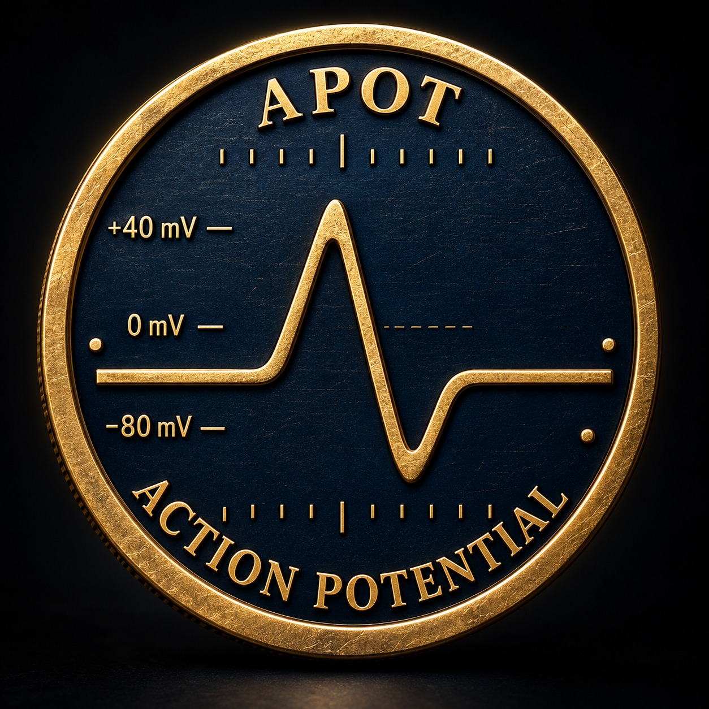

DU POTENTIEL À L’ACTION.
LE SIGNAL.
EST VIVANT.
Avant le mouvement, une impulsion.
Bienvenue dans l’univers de $APOT.
ET SI TOUT PARTAIT
D’UNE IMPULSION ?
Réglez le stimulus. Déclenchez le signal.
Observez ce qui se passe quand
le potentiel devient action.
Seuil illustratif : 60 / 100
Un geste. Une réaction.
À vous de déclencher la première.
Simulation visuelle simplifiée. Aucune mesure biologique ni donnée de marché.
Pourquoi une impulsion ?
Explorer le principe (NCBI, en anglais, nouvel onglet)
LE SIGNAL.
LES CHIFFRES.

OFFRE TOTALE 1Mdtokens APOT
Une offre de 1 000 000 000 tokens figure dans le récapitulatif de lancement fourni.
FRAIS DE TRADING 1,25%sur les échanges
Le récapitulatif affiche des frais de trading de 1,25 %. Ils sont distincts de la taxe de transfert destinée aux détenteurs.
TAXE VERS LES DÉTENTEURS 1%modèle « Reward token »
Le modèle sélectionné prévoit une taxe de transfert de 1 % redistribuée aux détenteurs, selon les modalités de la plateforme. Ce taux n’est pas une promesse de rendement.
APOT / NEURALINK
Quote token · catégorie PreStocksParamètres issus des captures de configuration fournies. L’adresse du contrat et le statut de lancement ne sont pas encore confirmés. La sélection du quote token NEURALINK n’implique aucune affiliation avec Neuralink.
À VOUS
DE JOUER.
L’univers est ouvert.
Retrouvez la plateforme de lancement.